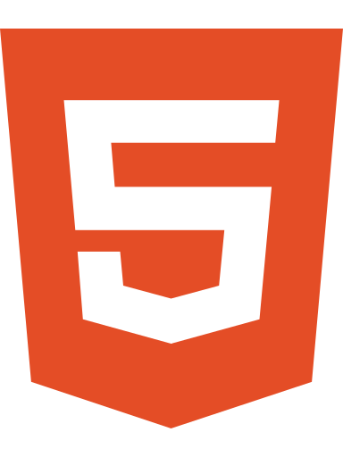
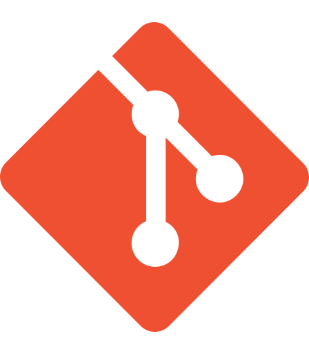

Frontend Development
Creating responsive user interfaces.

HTML5 CSS3
CSS3 JavaScript
JavaScript- React
- React Native
Hello, I'm
I'm a Business Information Technology student at the University of Johannesburg, passionate about creating modern, responsive and user-friendly digital experiences.
I'm a Business Information Technology student at the University of Johannesburg, with a strong interest in frontend development, business analysis and creating meaningful digital solutions.
My experience working on software projects has taught me that developing a successful application involves more than writing code. It requires creativity, collaboration, understanding user needs and finding practical ways to solve problems.
I'm continuously developing my technical skills while exploring how technology can help businesses operate more effectively and improve people's everyday experiences.
Every journey has its turning points. Mine taught me that progress isn't always a straight line.
My educational journey has been filled with challenges, difficult decisions and opportunities to start again. What began as a struggle to find direction eventually became a journey of personal growth, determination and academic achievement.
The technologies and tools I've worked with while learning, designing and building software projects.
Creating responsive user interfaces.

HTML5Working with relational data.
Planning, designing and delivering work.

GitA selection of the collaborative software projects I have contributed to, focused on creating useful and responsive experiences.
Web application
Trade Grid — Homepage
Trade Grid is a web platform for connecting importers and exporters, helping businesses discover potential trading partners and explore international markets.
My contribution: Frontend team member, working on the user interface and responsive layouts.
Mobile application
Login · Customer Dashboard · Mechanic Dashboard — Click to enlarge
MechanIQ is a mobile vehicle-assistance application designed around diagnostics, service requests, finding mechanics, and fuel support for drivers.
My contribution: Frontend team member, helping build and adapt the customer and mechanic interfaces.
Have a project in mind, an opportunity to collaborate, or a problem worth solving? I'd love to hear about it.
I'm always interested in meaningful conversations about frontend development, business analysis and practical digital solutions. Reach out through email, GitHub or LinkedIn.